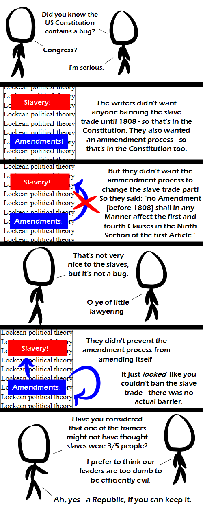

Comic JK 917
When I Feel Like It
⇤
<
?
>
⇥

⇤
<
?
>
⇥
Forum
.
RSS
.
Digg
.
Facebook
.
Reddit
.
Twitter
.
Stumbleupon
Comment on number 9.3561 of 17 there and then go create a koala borg sex-slave. Please, no standing, troweling, or loopholes. Please amend the first half of the first line as much as possible. So we were fine with Washington, but with Adams things started going downhill. >I support Adams... I think Dilbert is very funny... ( erm... oh... you didn't mean that* Adams... ) >>Of course not! (It's Douglas Adams, isn't it?) >>>I'm sure... in fact I'm Adam Ant... When I next (re)write the laws for a country, I'll keep this in mind. Don't want any pesky loopholes I don't want (some loopholes I may want for use in certain situations by people smart enough to use them) >"Don't want any [...] I don't want" <-- excellent self-reference in reference to this strip! >Only a lawyer would want that because that gives them job security >>Loopholes are deliberately retained because it's recognised that pre-existing law may not cover all possible eventualities and sometimes human judgement is required for a decision. To put it another way, a loophole-free constitution would also need to be (a) bug-free, and (b) Not just Turing-, but AI-complete. And that is why GOTO is still considered harmful >I think GOTO is not harmful at all. For example, if you want to crash your computer, you just write "10 GOTO 10". Your mother has lots of bugs that allow me to exploit her many (loop)holes. >She has bugs in them? Ew! Things like this can be really dangerous in AIs. There was also the little part about the Southern states being able to block any Amendment of that sort... Kind of a pointless bug, since it was never exploited before it expired. Comment on number 9.3561 of 17 there and then go steal a koala borg sex-slave. Please, no standing, troweling, or loopholes. Please amend the first half of the first line as much as possible. So we were fine with Washington, but with Adams things started going downhill. >dat dup bug again. OK WTF? If I save this it appends a chunk of the beginning at the end. Watch I'll just hit "Post to Comment box" 5 times: -------------------- Comment on number 9.3561 of 17 there and then go steal a koala borg sex-slave. Please, no standing, troweling, or loopholes. Please amend the first half of the first line as much as possible. So we were fine with Washington, but with Adams things started going downhill. Comment on number 9.3561 of 17 there and then go steal a koala borg sex-slave. Please, no standing, troweling, or loopholes. Please amend the first half of the first line as much as possible. So we were fine with Washington, but with Adams things started going downhill. Comment on number 9.3561 of 17 there and then go steal a koala borg sex-slave. Please, no standing, troweling, or loopholes. Please amend the first half of the first line as much as possible. So we were fine with Washington, but with Adams things started going downhill. ----- Now I changed "downhill." to "downhill;" and it doesn't happen anymore.